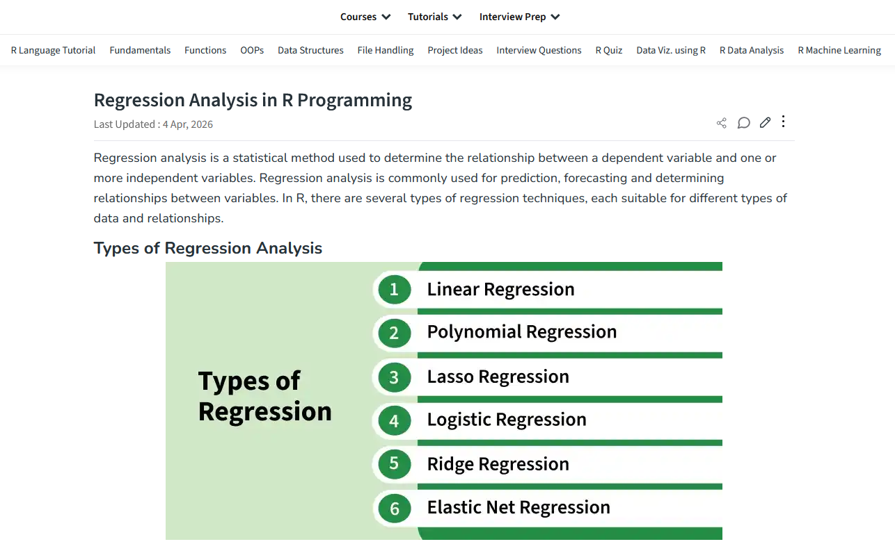
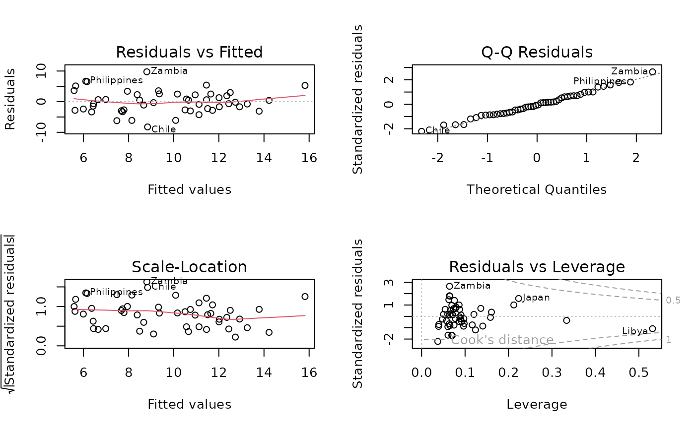
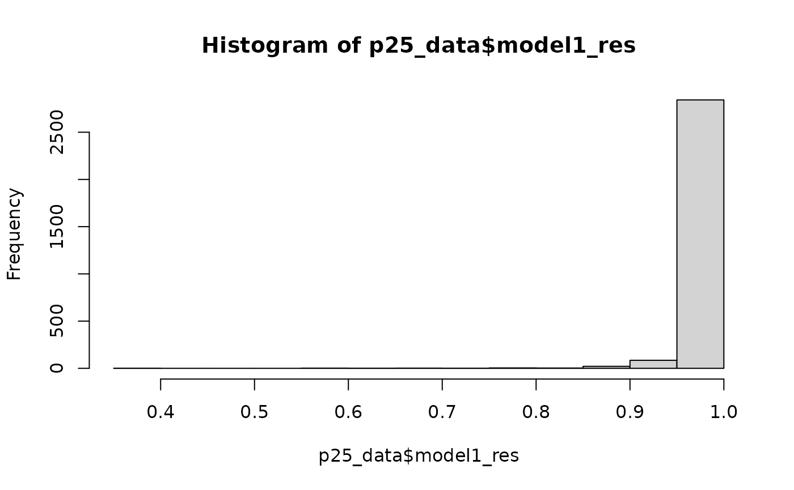
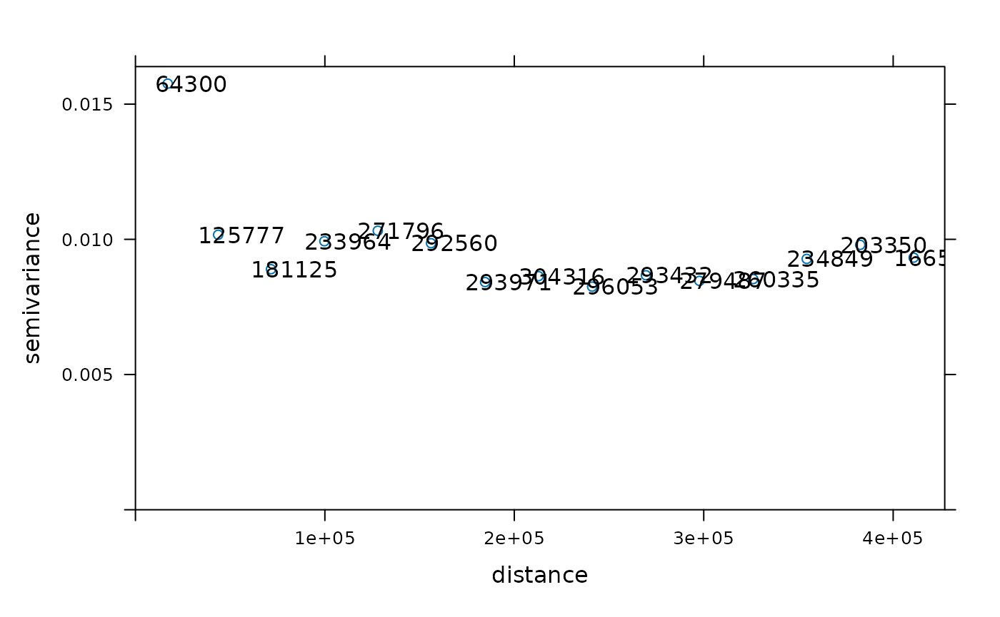
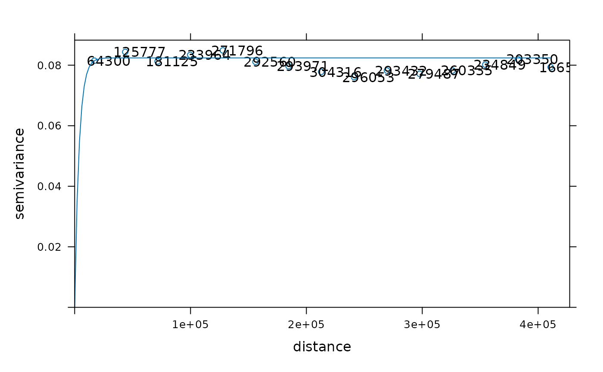
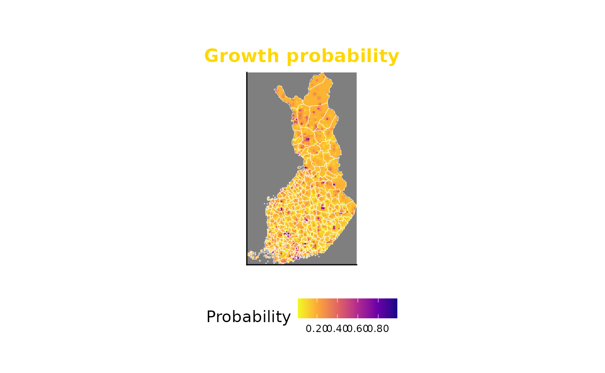

Lecture 4: Regression analysis
Olli Lehtonen
2026-03-27
Source:vignettes/lecture04-regression.Rmd
lecture04-regression.RmdRegression analysis
Let’s assume that we want to model the response Y in terms of three predictors; X1, X2 and X3. One general form for the model would be:
The multiple linear regression model can be written as
where
-
is the dependent variable
-
is the intercept
-
are regression coefficients
-
are explanatory variables
-
is the error term
Estimation of the model
The regression coefficients are usually estimated using ordinary least squares (OLS).
The idea of OLS is to choose coefficient values that minimize the sum of squared residuals:
where is the predicted value of for observation .
Under standard assumptions, the OLS estimators are unbiased and efficient.
Interpretation of coefficients
Each regression coefficient has a clear interpretation:
(intercept):
The expected value of when all predictors equal zero.: The expected change in for a one‑unit increase in , holding and constant.
: Interpreted analogously for and .
This “all else equal” interpretation is central to multiple regression analysis.
Model assumptions
For the linear regression model to be valid, the following assumptions are commonly made:
Linearity
The relationship between the predictors and the response is linear.Independence
Observations are independent of each other.Homoscedasticity
The variance of the error term is constant across observations.Normality of errors
The error term is normally distributed (mainly important for inference).No perfect multicollinearity
Predictors are not perfectly correlated with each other.
Violations of these assumptions can lead to biased estimates or invalid inference.
Goodness of fit
Two commonly used measures are:
The proportion of variance in explained by the model.Adjusted
Adjusts for the number of predictors and is preferred when comparing models.
The coefficient of determination is defined as
Extensions
Possible extensions of the basic linear regression framework include:
- interaction effects (e.g. )
- nonlinear terms (e.g. polynomials)
- generalized linear models
- spatial regression models
Look at this webpage for
https://www.geeksforgeeks.org/r-language/regression-analysis-in-r-programming/

Examples of regression models
Linear Regression in R, Step-by-Step
R programming for beginners – statistic with R (t-test and linear regression) and dplyr and ggplot
Faithfull data
Apply the simple linear regression model for the data set faithful, and estimate the next eruption duration if the waiting time since the last eruption has been 80 minutes.
Let’s check the dataset:
?faithfulThen let’s estimate the regression model:
eruption.lm = lm(eruptions ~ waiting, data=faithful) Then we extract the parameters of the estimated regression equation with the coefficients function.
coeffs = coefficients(eruption.lm); coeffs ## (Intercept) waiting
## -1.87401599 0.07562795We now fit the eruption duration using the estimated regression equation.
waiting = 80 # the waiting time
duration = coeffs[1] + coeffs[2]*waiting
duration ## (Intercept)
## 4.17622Based on the simple linear regression model, if the waiting time since the last eruption has been 80 minutes, we expect the next one to last 4.1762 minutes.
Gala data
Let’s look an example concerning the number of species of tortoise on the various Galapagos Islands. There are 30 cases (Islands) and seven variables in the dataset. We start by reading the data in to R and examining it.
## Species Endemics Area Elevation Nearest Scruz Adjacent
## Baltra 58 23 25.09 346 0.6 0.6 1.84
## Bartolome 31 21 1.24 109 0.6 26.3 572.33
## Caldwell 3 3 0.21 114 2.8 58.7 0.78
## Champion 25 9 0.10 46 1.9 47.4 0.18
## Coamano 2 1 0.05 77 1.9 1.9 903.82
## Daphne.Major 18 11 0.34 119 8.0 8.0 1.84
## Daphne.Minor 24 0 0.08 93 6.0 12.0 0.34
## Darwin 10 7 2.33 168 34.1 290.2 2.85
## Eden 8 4 0.03 71 0.4 0.4 17.95
## Enderby 2 2 0.18 112 2.6 50.2 0.10
## Espanola 97 26 58.27 198 1.1 88.3 0.57
## Fernandina 93 35 634.49 1494 4.3 95.3 4669.32
## Gardner1 58 17 0.57 49 1.1 93.1 58.27
## Gardner2 5 4 0.78 227 4.6 62.2 0.21
## Genovesa 40 19 17.35 76 47.4 92.2 129.49
## Isabela 347 89 4669.32 1707 0.7 28.1 634.49
## Marchena 51 23 129.49 343 29.1 85.9 59.56
## Onslow 2 2 0.01 25 3.3 45.9 0.10
## Pinta 104 37 59.56 777 29.1 119.6 129.49
## Pinzon 108 33 17.95 458 10.7 10.7 0.03
## Las.Plazas 12 9 0.23 94 0.5 0.6 25.09
## Rabida 70 30 4.89 367 4.4 24.4 572.33
## SanCristobal 280 65 551.62 716 45.2 66.6 0.57
## SanSalvador 237 81 572.33 906 0.2 19.8 4.89
## SantaCruz 444 95 903.82 864 0.6 0.0 0.52
## SantaFe 62 28 24.08 259 16.5 16.5 0.52
## SantaMaria 285 73 170.92 640 2.6 49.2 0.10
## Seymour 44 16 1.84 147 0.6 9.6 25.09
## Tortuga 16 8 1.24 186 6.8 50.9 17.95
## Wolf 21 12 2.85 253 34.1 254.7 2.33Let’s see background of the data:
?galaFitting a linear model in R is done using the lm( ) command. Notice the syntax for specifying the predictors in the model. By typing,
##
## Call:
## lm(formula = Species ~ Area + Elevation + Nearest + Scruz + Adjacent,
## data = gala)
##
## Residuals:
## Min 1Q Median 3Q Max
## -111.679 -34.898 -7.862 33.460 182.584
##
## Coefficients:
## Estimate Std. Error t value Pr(>|t|)
## (Intercept) 7.068221 19.154198 0.369 0.715351
## Area -0.023938 0.022422 -1.068 0.296318
## Elevation 0.319465 0.053663 5.953 3.82e-06 ***
## Nearest 0.009144 1.054136 0.009 0.993151
## Scruz -0.240524 0.215402 -1.117 0.275208
## Adjacent -0.074805 0.017700 -4.226 0.000297 ***
## ---
## Signif. codes: 0 '***' 0.001 '**' 0.01 '*' 0.05 '.' 0.1 ' ' 1
##
## Residual standard error: 60.98 on 24 degrees of freedom
## Multiple R-squared: 0.7658, Adjusted R-squared: 0.7171
## F-statistic: 15.7 on 5 and 24 DF, p-value: 6.838e-07We can identify several useful quantities in this output. Other statistical packages tend to produce output quite similar to this. One useful feature of R is that it is possible to directly calculate quantities of interest.
First we make the X-matrix:
x <- model.matrix(~Area + Elevation + Nearest + Scruz + Adjacent, gala)and here is the response y:
y <- gala$SpeciesNow let’s construct (XTX)-1. t ( ) does transpose and %*% does matrix multiplication. solve (A) computes A-1 while solve(A,b) solves Ax=b:
We can get B directly, using (XTX)-1XTy:
## [,1]
## (Intercept) 7.068220709
## Area -0.023938338
## Elevation 0.319464761
## Nearest 0.009143961
## Scruz -0.240524230
## Adjacent -0.074804832This is a very bad way to compute B because it is inefficient and can be very inaccurate when the predictors are strongly correlated. A better way is:
## [,1]
## (Intercept) 7.068220709
## Area -0.023938338
## Elevation 0.319464761
## Nearest 0.009143961
## Scruz -0.240524230
## Adjacent -0.074804832where crosspod(x,y) computes xTy.
We can extract the regression quantities we need from the model object. Commonly used are residuals (), fitted (), deviance () which gives the RSS, df.residual () which gives the degrees of freedom and coef () which gives the . You can also extract other needed quantities by examining the model object and its summary:
names(mdl)## [1] "coefficients" "residuals" "effects" "rank"
## [5] "fitted.values" "assign" "qr" "df.residual"
## [9] "xlevels" "call" "terms" "model"## [1] "call" "terms" "residuals" "coefficients"
## [5] "aliased" "sigma" "df" "r.squared"
## [9] "adj.r.squared" "fstatistic" "cov.unscaled"We can estimate using the formula , where n-p is the degrees of freedom. We can also extract it from the summary:
sqrt(deviance(mdl)/df.residual(mdl))## [1] 60.97519
mdls$sigma## [1] 60.97519We can also extract (XTX)-1 and use it to compute the standard errors for the coefficients:
## (Intercept) Area Elevation Nearest Scruz Adjacent
## 19.15413865 0.02242228 0.05366264 1.05413269 0.21540158 0.01770013or get them from the summary object:
mdls$coef[,2]## (Intercept) Area Elevation Nearest Scruz Adjacent
## 19.15419782 0.02242235 0.05366280 1.05413595 0.21540225 0.01770019Finally, we may compute or extract R2:
## [1] 0.7658469
mdls$r.squared## [1] 0.7658469Hypothesis Testing for Comparing Regression Models
In regression analysis, we often want to test whether a subset of predictors is statistically relevant. This can be formulated as a hypothesis test comparing:
- a full model (with all predictors), and
- a restricted (nested) model where some coefficients are set to zero.
We use F-tests to compare these models.
The data and model
We use the built-in savings dataset, which contains
information on savings rates and several demographic and economic
predictors.
data(savings)The response variable is:
- sr: aggregate personal saving rate
The predictors are:
- pop15: percentage of population under 15
- pop75: percentage of population over 75
- dpi: real per-capita disposable income
- ddpi: growth rate of disposable income
The Full Regression Model:
We begin by fitting the full model, which includes all predictors.
##
## Call:
## lm(formula = sr ~ pop15 + pop75 + dpi + ddpi, data = savings)
##
## Residuals:
## Min 1Q Median 3Q Max
## -8.2422 -2.6857 -0.2488 2.4280 9.7509
##
## Coefficients:
## Estimate Std. Error t value Pr(>|t|)
## (Intercept) 28.5660865 7.3545161 3.884 0.000334 ***
## pop15 -0.4611931 0.1446422 -3.189 0.002603 **
## pop75 -1.6914977 1.0835989 -1.561 0.125530
## dpi -0.0003369 0.0009311 -0.362 0.719173
## ddpi 0.4096949 0.1961971 2.088 0.042471 *
## ---
## Signif. codes: 0 '***' 0.001 '**' 0.01 '*' 0.05 '.' 0.1 ' ' 1
##
## Residual standard error: 3.803 on 45 degrees of freedom
## Multiple R-squared: 0.3385, Adjusted R-squared: 0.2797
## F-statistic: 5.756 on 4 and 45 DF, p-value: 0.0007904This model estimates the relationship between the savings rate and all four explanatory variables.
Testing Overall Model Significance Using an F-Test
Total Sum of Squares (TSS)
The total variation in the response variable is given by:
## [1] 983.6283Residual Sum of Squares (RSS)
The unexplained variation under the full model is:
rss <- deviance(g)
rss## [1] 650.713Residual Degrees of Freedom
df.residual(g)## [1] 45Manual F-Statistic Calculation
The F-statistic is computed as:
fstat <- ((tss - rss) / 4) / (rss / df.residual(g))
fstat## [1] 5.755681P-value for the F-Test
1 - pf(fstat, 4, df.residual(g))## [1] 0.0007903779A small p-value indicates that at least one predictor is statistically significant.
General F-Test: Comparing Nested Models
Instead of testing against a model with no predictors, we can compare two nested regression models.
Restricted (Null) Model We remove pop15 from the full model:
g2 <- lm(sr ~ pop75 + dpi + ddpi, savings)Residual Sum of Squares for the Restricted Model
rss2 <- deviance(g2)
rss2## [1] 797.7249F-Statistic for Nested Models
fstat <- (deviance(g2) - deviance(g)) / (deviance(g) / df.residual(g))
fstat## [1] 10.16659Corresponding P-value
1 - pf(fstat, 1, df.residual(g))## [1] 0.002603019Using anova() for Model Comparison
A more convenient and standard approach is to use the anova() function.
anova(g2, g)## Analysis of Variance Table
##
## Model 1: sr ~ pop75 + dpi + ddpi
## Model 2: sr ~ pop15 + pop75 + dpi + ddpi
## Res.Df RSS Df Sum of Sq F Pr(>F)
## 1 46 797.72
## 2 45 650.71 1 147.01 10.167 0.002603 **
## ---
## Signif. codes: 0 '***' 0.001 '**' 0.01 '*' 0.05 '.' 0.1 ' ' 1This automatically computes the F-statistic and p-value for comparing nested models.
Testing Multiple Coefficient Restrictions
We now test whether both pop75 and ddpi can be excluded from the model.
Restricted Model
g3 <- lm(sr ~ pop15 + dpi, savings)Model Comparison
anova(g3, g)## Analysis of Variance Table
##
## Model 1: sr ~ pop15 + dpi
## Model 2: sr ~ pop15 + pop75 + dpi + ddpi
## Res.Df RSS Df Sum of Sq F Pr(>F)
## 1 47 744.12
## 2 45 650.71 2 93.411 3.2299 0.04889 *
## ---
## Signif. codes: 0 '***' 0.001 '**' 0.01 '*' 0.05 '.' 0.1 ' ' 1Summary
- F-tests allow us to compare nested regression models
- The test evaluates whether excluded variables significantly improve model fit
- For a single restriction, the F-test is equivalent to a t-test
- The anova() function provides a clean and reliable implementation
These tools are essential for principled model selection in regression analysis.
Variable selection in regression models
In multiple regression analysis, we often face the question of which predictors should be included in the model. Including too many variables may lead to over fitting, while excluding relevant predictors can bias results.
A common approach for variable selection is to use information criteria, such as the Akaike Information Criterion (AIC), which balances model fit and model complexity.
Variable selection using AIC
We illustrate variable selection methods using the built‑in state dataset.
First, we construct a data frame containing the variables of interest and fit a full regression model including all predictors.
data(state)
statedata <- data.frame(
state.x77,
row.names = state.abb,
check.names = TRUE)
g <- lm(Life.Exp ~ ., data = statedata)Stepwise variable selection using AIC
The step() function performs stepwise model selection by sequentially adding or removing predictors based on the AIC value.
step(g)## Start: AIC=-22.18
## Life.Exp ~ Population + Income + Illiteracy + Murder + HS.Grad +
## Frost + Area
##
## Df Sum of Sq RSS AIC
## - Area 1 0.0011 23.298 -24.182
## - Income 1 0.0044 23.302 -24.175
## - Illiteracy 1 0.0047 23.302 -24.174
## <none> 23.297 -22.185
## - Population 1 1.7472 25.044 -20.569
## - Frost 1 1.8466 25.144 -20.371
## - HS.Grad 1 2.4413 25.738 -19.202
## - Murder 1 23.1411 46.438 10.305
##
## Step: AIC=-24.18
## Life.Exp ~ Population + Income + Illiteracy + Murder + HS.Grad +
## Frost
##
## Df Sum of Sq RSS AIC
## - Illiteracy 1 0.0038 23.302 -26.174
## - Income 1 0.0059 23.304 -26.170
## <none> 23.298 -24.182
## - Population 1 1.7599 25.058 -22.541
## - Frost 1 2.0488 25.347 -21.968
## - HS.Grad 1 2.9804 26.279 -20.163
## - Murder 1 26.2721 49.570 11.569
##
## Step: AIC=-26.17
## Life.Exp ~ Population + Income + Murder + HS.Grad + Frost
##
## Df Sum of Sq RSS AIC
## - Income 1 0.006 23.308 -28.161
## <none> 23.302 -26.174
## - Population 1 1.887 25.189 -24.280
## - Frost 1 3.037 26.339 -22.048
## - HS.Grad 1 3.495 26.797 -21.187
## - Murder 1 34.739 58.041 17.456
##
## Step: AIC=-28.16
## Life.Exp ~ Population + Murder + HS.Grad + Frost
##
## Df Sum of Sq RSS AIC
## <none> 23.308 -28.161
## - Population 1 2.064 25.372 -25.920
## - Frost 1 3.122 26.430 -23.877
## - HS.Grad 1 5.112 28.420 -20.246
## - Murder 1 34.816 58.124 15.528##
## Call:
## lm(formula = Life.Exp ~ Population + Murder + HS.Grad + Frost,
## data = statedata)
##
## Coefficients:
## (Intercept) Population Murder HS.Grad Frost
## 7.103e+01 5.014e-05 -3.001e-01 4.658e-02 -5.943e-03Interpretation:
- The algorithm searches for a model with lower AIC than the full model.
- At each step, predictors are added or removed if doing so improves the AIC.
- The final model represents a balance between goodness of fit and model simplicity.
Alternative approach: stepAIC() from the MASS package
The MASS package provides the stepAIC() function, which allows explicit control over the direction of the search.
##
## Attaching package: 'MASS'## The following object is masked from 'package:patchwork':
##
## area## The following object is masked from 'package:dplyr':
##
## select## Start: AIC=-22.18
## Life.Exp ~ Population + Income + Illiteracy + Murder + HS.Grad +
## Frost + Area
##
## Df Sum of Sq RSS AIC
## - Area 1 0.0011 23.298 -24.182
## - Income 1 0.0044 23.302 -24.175
## - Illiteracy 1 0.0047 23.302 -24.174
## <none> 23.297 -22.185
## - Population 1 1.7472 25.044 -20.569
## - Frost 1 1.8466 25.144 -20.371
## - HS.Grad 1 2.4413 25.738 -19.202
## - Murder 1 23.1411 46.438 10.305
##
## Step: AIC=-24.18
## Life.Exp ~ Population + Income + Illiteracy + Murder + HS.Grad +
## Frost
##
## Df Sum of Sq RSS AIC
## - Illiteracy 1 0.0038 23.302 -26.174
## - Income 1 0.0059 23.304 -26.170
## <none> 23.298 -24.182
## - Population 1 1.7599 25.058 -22.541
## + Area 1 0.0011 23.297 -22.185
## - Frost 1 2.0488 25.347 -21.968
## - HS.Grad 1 2.9804 26.279 -20.163
## - Murder 1 26.2721 49.570 11.569
##
## Step: AIC=-26.17
## Life.Exp ~ Population + Income + Murder + HS.Grad + Frost
##
## Df Sum of Sq RSS AIC
## - Income 1 0.006 23.308 -28.161
## <none> 23.302 -26.174
## - Population 1 1.887 25.189 -24.280
## + Illiteracy 1 0.004 23.298 -24.182
## + Area 1 0.000 23.302 -24.174
## - Frost 1 3.037 26.339 -22.048
## - HS.Grad 1 3.495 26.797 -21.187
## - Murder 1 34.739 58.041 17.456
##
## Step: AIC=-28.16
## Life.Exp ~ Population + Murder + HS.Grad + Frost
##
## Df Sum of Sq RSS AIC
## <none> 23.308 -28.161
## + Income 1 0.006 23.302 -26.174
## + Illiteracy 1 0.004 23.304 -26.170
## + Area 1 0.001 23.307 -26.163
## - Population 1 2.064 25.372 -25.920
## - Frost 1 3.122 26.430 -23.877
## - HS.Grad 1 5.112 28.420 -20.246
## - Murder 1 34.816 58.124 15.528##
## Call:
## lm(formula = Life.Exp ~ Population + Murder + HS.Grad + Frost,
## data = statedata)
##
## Coefficients:
## (Intercept) Population Murder HS.Grad Frost
## 7.103e+01 5.014e-05 -3.001e-01 4.658e-02 -5.943e-03Interpretation:
- “both” allows both forward selection and backward elimination.
- Results are often comparable to step() but offer more flexibility.
- Smaller AIC values indicate preferred models.
Best subset selection using the leaps package
Another approach to variable selection is best subset selection, which evaluates combinations of predictors rather than following a stepwise path.
library(leaps)
x <- model.matrix(g)[, -1]
y <- statedata$Life.Exp
g_leaps <- leaps(x, y)This method examines models with different numbers of predictors to identify those with optimal performance according to specific criteria.
Model comparison using Mallows’ Cp
Mallows’ statistic is commonly used to assess model adequacy and complexity.
Interpretation:
- Models with low values are preferred.
- A good model typically has close to the number of predictors plus the intercept.
- This plot helps identify parsimonious models with strong explanatory power.
Summary
Different variable selection techniques may lead to different models. In practice:
- Stepwise methods are computationally efficient but may miss optimal models.
- Best subset selection provides a broader comparison but can be computationally expensive.
- Information criteria such as AIC help balance model fit and complexity.
Variable selection should always be guided by statistical reasoning, theoretical understanding, and substantive knowledge, not automatic procedures alone.
Regression diagnostic
Regression diagnostics are used to evaluate whether the assumptions of the linear regression model are reasonably satisfied and to identify potentially influential observations.
In this section, we illustrate regression diagnostics using an example dataset.
Diagnostics for a multiple linear regression model
We use the savings dataset from the faraway package. First, we fit a multiple linear regression model and then inspect standard diagnostic plots.
R automatically produces four standard diagnostic plots for a linear regression model using the plot() function. These plots help assess model assumptions and identify problematic observations.

Residuals vs. Fitted values This plot examines whether the relationship between predictors and the response is approximately linear. Interpretation:
- It is desirable to see residuals evenly scattered around a horizontal line at zero.
- Systematic patterns (curvature or funnel shapes) may indicate nonlinearity or heteroscedasticity.
Normal Q–Q plot This plot assesses whether the residuals are approximately normally distributed. Interpretation:
- If residuals follow the dashed reference line closely, the normality assumption is reasonable.
- Strong deviations from the line suggest departures from normality.
Scale–Location plot Also called the Spread–Location plot, this diagnostic evaluates the assumption of constant variance (homoscedasticity). Interpretation:
- A roughly horizontal line with evenly spread points is desirable.
- Increasing or decreasing spread suggests heteroscedasticity.
Residuals vs. Leverage This plot identifies observations that may have a disproportionate influence on the fitted model. Interpretation:
- Observations with high leverage and large residuals are potentially influential.
- Points lying outside the Cook’s distance contours may substantially affect model estimates.
Summary Diagnostic plots provide essential insight into:
- linearity
- normality of residuals
- constant variance
- influence of individual observations
If serious violations are detected, remedial measures such as transforming variables, adding nonlinear terms, or using alternative models should be considered.
Regression analysis and open postcode area data
The Paavo service contains data by postal code area on the population structure, education, income, housing, workplaces, households’ life stage and main activities of the inhabitants.
The database contains data by postal code area on the population structure, education, income, housing, workplaces, households’ life stage and main activities of the inhabitants.
You can use the data in decision-making and planning or learn more about your area of residence. Paavo offers information on the allocation of marketplaces, marketing planning, research and regional studies and plans.
You can find more information about PAAVO from here: https://stat.fi/en/services/statistical-data-services/statistical-databases/paavo
Objective of the Exercise In this lecture, we demonstrate how to:
- Download spatial postcode-level data from Statistics Finland’s WFS service
- Combine data from two different years
- Compute changes in employment at the postcode area level
- Classify areas by employment growth intensity
- Summarize employment concentrations in growth areas
The workflow combines spatial data handling, data merging, and basic regional analysis.
install.packages("purrr")
install.packages("sf")
install.packages("tmap")
install.packages("httr")
install.packages("data.table")
install.packages("ows4R")
#options(pckgType="binary")
library(dplyr)
library(purrr)
library(sf)
library(httr)
library(data.table)
library(ows4R)Downloading Postcode Area Data (Year 2022)
We begin by downloading postcode area data using a Web Feature Service (WFS) query.
url <-list(hostname ="geo.stat.fi/geoserver/postialue/wfs",
scheme ="https",
query =list(service ="WFS",
version ="2.0.0",
request ="GetFeature",
typename ="postialue:pno_tilasto_2025",
outputFormat ="json"))%>%
setattr("class","url")
request <-build_url(url)
p25 <-st_read(request)## Reading layer `OGRGeoJSON' from data source
## `https://geo.stat.fi/geoserver/postialue/wfs/?service=WFS&version=2.0.0&request=GetFeature&typename=postialue%3Apno_tilasto_2025&outputFormat=json'
## using driver `GeoJSON'
## Simple feature collection with 3026 features and 113 fields
## Geometry type: MULTIPOLYGON
## Dimension: XY
## Bounding box: xmin: 83748.43 ymin: 6629044 xmax: 732907.7 ymax: 7776450
## Projected CRS: ETRS89 / TM35FIN(E,N)This produces an sf object containing postcode area geometries and associated attributes, including the number of jobs.
Downloading Corresponding Data for Year 2016
We repeat the same procedure for the year 2016.
url <-list(hostname ="geo.stat.fi/geoserver/postialue/wfs",
scheme ="https",
query =list(service ="WFS",
version ="2.0.0",
request ="GetFeature",
typename ="postialue:pno_tilasto_2016",
outputFormat ="json"))%>%
setattr("class","url")
request <-build_url(url)
p16 <-st_read(request)## Reading layer `OGRGeoJSON' from data source
## `https://geo.stat.fi/geoserver/postialue/wfs/?service=WFS&version=2.0.0&request=GetFeature&typename=postialue%3Apno_tilasto_2016&outputFormat=json'
## using driver `GeoJSON'
## Simple feature collection with 3036 features and 113 fields
## Geometry type: MULTIPOLYGON
## Dimension: XY
## Bounding box: xmin: 83748.43 ymin: 6629044 xmax: 732907.7 ymax: 7776450
## Projected CRS: ETRS89 / TM35FIN(E,N)Inspecting the Data Structure
To understand the available variables, we list the column names.
names(p16)## [1] "id" "gid" "posti_alue" "nimi" "namn"
## [6] "euref_x" "euref_y" "pinta_ala" "vuosi" "kunta"
## [11] "he_vakiy" "he_naiset" "he_miehet" "he_kika" "he_0_2"
## [16] "he_3_6" "he_7_12" "he_13_15" "he_16_17" "he_18_19"
## [21] "he_20_24" "he_25_29" "he_30_34" "he_35_39" "he_40_44"
## [26] "he_45_49" "he_50_54" "he_55_59" "he_60_64" "he_65_69"
## [31] "he_70_74" "he_75_79" "he_80_84" "he_85_" "ko_ika18y"
## [36] "ko_perus" "ko_koul" "ko_yliop" "ko_ammat" "ko_al_kork"
## [41] "ko_yl_kork" "hr_tuy" "hr_ktu" "hr_mtu" "hr_pi_tul"
## [46] "hr_ke_tul" "hr_hy_tul" "hr_ovy" "te_taly" "te_takk"
## [51] "te_as_valj" "te_nuor" "te_eil_np" "te_laps" "te_plap"
## [56] "te_aklap" "te_klap" "te_teini" "te_aik" "te_elak"
## [61] "te_omis_as" "te_vuok_as" "te_muu_as" "tr_kuty" "tr_ktu"
## [66] "tr_mtu" "tr_pi_tul" "tr_ke_tul" "tr_hy_tul" "tr_ovy"
## [71] "ra_ke" "ra_raky" "ra_muut" "ra_asrak" "ra_asunn"
## [76] "ra_as_kpa" "ra_pt_as" "ra_kt_as" "tp_tyopy" "tp_alku_a"
## [81] "tp_jalo_bf" "tp_palv_gu" "tp_a_maat" "tp_b_kaiv" "tp_c_teol"
## [86] "tp_d_ener" "tp_e_vesi" "tp_f_rake" "tp_g_kaup" "tp_h_kulj"
## [91] "tp_i_majo" "tp_j_info" "tp_k_raho" "tp_l_kiin" "tp_m_erik"
## [96] "tp_n_hall" "tp_o_julk" "tp_p_koul" "tp_q_terv" "tp_r_taid"
## [101] "tp_s_muup" "tp_t_koti" "tp_u_kans" "tp_x_tunt" "pt_vakiy"
## [106] "pt_tyovy" "pt_tyoll" "pt_tyott" "pt_tyovu" "pt_0_14"
## [111] "pt_opisk" "pt_elakel" "pt_muut" "geometry"Extracting Relevant Variables (2016 Data)
We extract:
- the postcode area identifier
- the total number of jobs in 2016
p16data<-p16[,c(3,79)]
p16data<-as.data.frame(p16data[,1:2])
colnames(p16data)<-c("posti_alue","tyopy16") #postcode & total number of jobs- posti_alue: postcode area
- tyopy16: total number of jobs in 2016
Merging 2016 Data with 2022 Spatial Data
We merge the 2016 employment data with the 2022 spatial dataset using a right join. Before doing so, we convert the ID variables (postinumeroalue and posti_alue) to the same data type, because joins require matching variable types.
p25$postinumeroalue <- as.numeric(p25$postinumeroalue)
p16data$posti_alue <- as.numeric(p16data$posti_alue)
p25_data <- dplyr::right_join(x = p16data, y = p25, by=c("posti_alue" = "postinumeroalue"))Why right_join()?
- Preserves the geometry and structure of the 2022 spatial dataset
- Ensures that all 2022 postcode areas remain in the data
Handling Missing Values
If a postcode area has no recorded jobs in 2016, we treat this as zero employment.
p25_data$tyopy16[is.na(p25_data$tyopy16)] <- 0Calculating Employment Change (2016–2022)
Absolute Change & Percentage Change
p25_data$tp_m25_16<-(p25_data$tp_tyopy-p25_data$tyopy16)
p25_data$tp_m25_16p<-((p25_data$tp_tyopy-p25_data$tyopy16)/p25_data$tyopy16)*100- tp_tyopy: total number of jobs in 2025
- tp_m25_16: absolute employment change in from 2016 to 2025
- tp_m25_16p: percentage change in from 2016 to 2025
Classifying Employment Growth Areas
We classify postcode areas into growth categories based on absolute job growth.
Any Positive Growth
##
## 0 1
## 1932 1094Weak Growth (More Than 10 Jobs)
##
## 0 1
## 2287 739Moderate Growth (More Than 100 Jobs)
##
## 0 1
## 2673 353Strong Growth (More Than 500 Jobs)
##
## 0 1
## 2893 133These classifications allow us to define different employment growth scenarios at the postcode level.
Total Number of Jobs (2022)
sum(p25_data$tp_tyopy) ## [1] 2271080Share of Jobs Located in Growth Areas
We now compute the share of total employment located in areas with different growth intensities. The denominator 2,150,025 represents the total number of jobs nationally.
## [1] 0.3726055## [1] 0.5158832## [1] 0.5937043## [1] 0.6052728These indicators help quantify how concentrated employment growth is geographically.
Modelling the Development of the Number of Jobs
In this section, we construct explanatory variables and estimate a binary response model for job growth using a binomial (logistic) regression.
We begin by constructing several percentage-based and density variables that will be used as regressors in the model.
# Unemployment rate (%)
p25_data$tyottom <- (p25_data$pt_tyott / p25_data$pt_tyoll) * 100
# Share of highly educated (%)
p25_data$korkk <- (p25_data$ko_yl_kork / p25_data$ko_koul) * 100
# Share of new jobs (%)
p25_data$alkut <- (p25_data$tp_alku_a / p25_data$tp_tyopy) * 100
# Share of retirees (%)
p25_data$elak <- (p25_data$te_elak / p25_data$te_taly) * 100
# Population density (inhabitants per km^2)
p25_data$as_tih <- p25_data$he_vakiy / (p25_data$pinta_ala / 1000)Model Specification
We estimate a generalized linear model (GLM) with a binomial distribution and a logit link function. The dependent variable kasvu indicates whether job growth occurred.
model1<-glm(kasvu~tyottom+korkk+alkut+elak+as_tih+he_kika+ra_as_kpa, data=p25_data, family="binomial",na.action = na.exclude)Model Output
The table below reports coefficient estimates, standard errors, and significance levels.
summary(model1)##
## Call:
## glm(formula = kasvu ~ tyottom + korkk + alkut + elak + as_tih +
## he_kika + ra_as_kpa, family = "binomial", data = p25_data,
## na.action = na.exclude)
##
## Coefficients:
## Estimate Std. Error z value Pr(>|z|)
## (Intercept) 4.273897 0.502507 8.505 < 2e-16 ***
## tyottom -0.040544 0.004742 -8.549 < 2e-16 ***
## korkk 0.001043 0.004656 0.224 0.822714
## alkut -0.002325 0.001593 -1.460 0.144409
## elak -0.016733 0.003474 -4.817 1.46e-06 ***
## as_tih 0.007729 0.042394 0.182 0.855338
## he_kika -0.055771 0.007655 -7.285 3.21e-13 ***
## ra_as_kpa -0.010629 0.002905 -3.659 0.000253 ***
## ---
## Signif. codes: 0 '***' 0.001 '**' 0.01 '*' 0.05 '.' 0.1 ' ' 1
##
## (Dispersion parameter for binomial family taken to be 1)
##
## Null deviance: 3888.5 on 2961 degrees of freedom
## Residual deviance: 3599.2 on 2954 degrees of freedom
## (64 observations deleted due to missingness)
## AIC: 3615.2
##
## Number of Fisher Scoring iterations: 4Note: At this stage, you should carefully analyse the model diagnostics (e.g. goodness-of-fit, influential observations, and multicollinearity).
Predicted Probabilities
Using the estimated model, we calculate predicted probabilities of job growth for each observation.
p25_data$model1_res<-predict(model1, type="response")Distribution of Predicted Probabilities
Finally, we visualise the distribution of the predicted probabilities.
hist(p25_data$model1_res)
What if we change model?
The model is modified by replacing the dependent variable with strong concentration, in order to examine how the regression coefficients change.
model2<-glm(kasvu_voima~tyottom+korkk+alkut+elak+as_tih+he_kika+ra_as_kpa, data=p25_data, family="binomial",na.action = na.exclude)
summary(model2)##
## Call:
## glm(formula = kasvu_voima ~ tyottom + korkk + alkut + elak +
## as_tih + he_kika + ra_as_kpa, family = "binomial", data = p25_data,
## na.action = na.exclude)
##
## Coefficients:
## Estimate Std. Error z value Pr(>|z|)
## (Intercept) 10.512921 1.324784 7.936 2.10e-15 ***
## tyottom -0.117887 0.013440 -8.771 < 2e-16 ***
## korkk -0.008111 0.010146 -0.799 0.4240
## alkut -0.013869 0.006103 -2.272 0.0231 *
## elak -0.010439 0.009340 -1.118 0.2637
## as_tih 0.013914 0.053423 0.260 0.7945
## he_kika -0.134070 0.022253 -6.025 1.69e-09 ***
## ra_as_kpa -0.066380 0.007284 -9.114 < 2e-16 ***
## ---
## Signif. codes: 0 '***' 0.001 '**' 0.01 '*' 0.05 '.' 0.1 ' ' 1
##
## (Dispersion parameter for binomial family taken to be 1)
##
## Null deviance: 1048.43 on 2961 degrees of freedom
## Residual deviance: 710.62 on 2954 degrees of freedom
## (64 observations deleted due to missingness)
## AIC: 726.62
##
## Number of Fisher Scoring iterations: 7Interpretation of results
Model fit
Null deviance: 3343.3
Residual deviance: 2038.1
AIC: 2054.1
The large deviance reduction indicates that the model explains a substantial share of variation in strong growth outcomes.
Interpretation of coefficients
Strong negative effects
Unemployment (tyottom)
Areas with high unemployment are much less likely to experience strong growth.
Average age of inhabitants (he_kika)
The negative effect indicates that postal code areas with an older population are significantly less likely to experience strong job growth.
Housing space per capita (ra_as_kpa)
Strongly negative effect indicates that dense housing environments are central to rapid growth.
Higher education (korkk)
Negative effect may reflect that strong growth occurs in emerging urban zones, rather than already highly educated cores.
Strong positive effect
Share of pensioners (elak)
Positive and significant
Suggests some regions experiencing strong growth may be retirement‑oriented destinations or benefit from aging‑related in‑migration.
Non‑effect
Population density (as_tih)
No statistically meaningful effect once other variables are controlled for.
Substantive interpretation
Strong job growth follows a distinctly different logic than general growth:
- It concentrates in economically robust areas
- It is associated with low unemployment
- It favours compact housing structures
- It is less dependent on youth concentration alone
This suggests a polarised growth regime, where a small number of highly competitive regions attract a disproportionate share of jobs increases.
And then we can save the model2 results for a new variable called as model2_res:
p25_data$model2_res<-predict(model2, type="response")How do the regression coefficients differ relative to Model 1? What conclusions can be drawn from the results?
Model diagnostics
Why diagnostics matter in logistic regression?
Model diagnostics help you answer four key questions:
- Does the model fit the data reasonably well?
- Are the predictors behaving as expected?
- Are there influential or problematic observations?
- Are the model assumptions seriously violated?
Logistic regression does not assume normal errors or constant variance, but it does rely on other important assumptions.
1. Overall model fit
- Residual deviance vs. null deviance From summary(model1):
summary(model1)##
## Call:
## glm(formula = kasvu ~ tyottom + korkk + alkut + elak + as_tih +
## he_kika + ra_as_kpa, family = "binomial", data = p25_data,
## na.action = na.exclude)
##
## Coefficients:
## Estimate Std. Error z value Pr(>|z|)
## (Intercept) 4.273897 0.502507 8.505 < 2e-16 ***
## tyottom -0.040544 0.004742 -8.549 < 2e-16 ***
## korkk 0.001043 0.004656 0.224 0.822714
## alkut -0.002325 0.001593 -1.460 0.144409
## elak -0.016733 0.003474 -4.817 1.46e-06 ***
## as_tih 0.007729 0.042394 0.182 0.855338
## he_kika -0.055771 0.007655 -7.285 3.21e-13 ***
## ra_as_kpa -0.010629 0.002905 -3.659 0.000253 ***
## ---
## Signif. codes: 0 '***' 0.001 '**' 0.01 '*' 0.05 '.' 0.1 ' ' 1
##
## (Dispersion parameter for binomial family taken to be 1)
##
## Null deviance: 3888.5 on 2961 degrees of freedom
## Residual deviance: 3599.2 on 2954 degrees of freedom
## (64 observations deleted due to missingness)
## AIC: 3615.2
##
## Number of Fisher Scoring iterations: 4Key quantities:
- Null deviance: model with no predictors
- Residual deviance: model with predictors
Rule of thumb
- Residual deviance should be clearly smaller than the null deviance.
If they are very similar, the predictors add little explanatory power.
- Likelihood ratio test You can formally test whether the full model is better than the null model:
anova(model1, test = "Chisq")## Analysis of Deviance Table
##
## Model: binomial, link: logit
##
## Response: kasvu
##
## Terms added sequentially (first to last)
##
##
## Df Deviance Resid. Df Resid. Dev Pr(>Chi)
## NULL 2961 3888.5
## tyottom 1 12.878 2960 3875.7 0.0003325 ***
## korkk 1 111.598 2959 3764.1 < 2.2e-16 ***
## alkut 1 15.278 2958 3748.8 9.281e-05 ***
## elak 1 81.310 2957 3667.5 < 2.2e-16 ***
## as_tih 1 5.266 2956 3662.2 0.0217453 *
## he_kika 1 49.486 2955 3612.7 1.998e-12 ***
## ra_as_kpa 1 13.553 2954 3599.2 0.0002319 ***
## ---
## Signif. codes: 0 '***' 0.001 '**' 0.01 '*' 0.05 '.' 0.1 ' ' 1A small p‑value indicates that the model improves fit relative to an intercept‑only model.
2. Goodness of fit
- Pseudo‑R² Logistic regression does not have an ordinary R², but pseudo‑R² measures are useful:
Common interpretation:
- 0.02–0.05: weak fit
- 0.10–0.20: moderate fit
0.20: strong fit (for social sciences)
These are not directly comparable to linear regression R².
- Classification performance (optional) If your outcome kasvu is binary (0/1):
##
## pred_class 0 1
## 0 1687 729
## 1 193 353This helps evaluate prediction accuracy, but should not replace statistical diagnostics.
3. Residual diagnostics
- Deviance residuals Plot residuals against fitted values:
res <- residuals(model1, type = "deviance")
fit <- fitted(model1)
plot(fit, res,
xlab = "Fitted values",
ylab = "Deviance residuals")What to look for:
- Residuals roughly centered around zero
- No strong patterns or funnels
Problems:
- Curvature - missing nonlinear terms
- Extreme vertical spreads - outliers or poor fit
- Residuals vs. predictors
Example:
plot(p25_data$tyottom, residuals(model1, type = "deviance"),
xlab = "Unemployment rate",
ylab = "Deviance residuals")
abline(h = 0, lty = 2)Residuals should not show systematic trends.
4. Influential observations
Some data points may have disproportionate influence on the results. (a) Cook’s distance
plot(cooks.distance(model1),
ylab = "Cook's distance")
abline(h = 4 / nrow(p25_data), lty = 2)Observations above the line deserve inspection.
- Leverage and influence
High leverage points are not automatically wrong, but they should be understood substantively.
5. Multicollinearity diagnostics
Highly correlated predictors can inflate standard errors.
Rule of thumb:
- VIF < 5 - usually acceptable
- VIF > 10 - serious multicollinearity
6. Functional form (linearity in the logit)
Logistic regression assumes that continuous predictors are linearly related to the log‑odds, not to the outcome itself.
Visual check (example)
library(ggplot2)
ggplot(p25_data, aes(tyottom, model1_res)) +
geom_point() +
geom_smooth()Curvature suggests you may need:
- transformations,
- polynomial terms,
- or splines.
Spatial Interpolation with Kriging
What is spatial interpolation?
Spatial interpolation is the activity of estimating values of spatially continuous variables at locations where they have not been observed, based on measurements at known locations.
1. Introduction
In this exercise, a continuous surface is created using interpolation to describe the probability of growth in the number of jobs across Finland. In this way, we visualise the results of the regression model developed in the previous exercise.
In these lecture notes we:
- demonstrate simple spatial interpolation techniques,
- explore modelling of spatial correlation using variograms,
- perform spatial prediction using ordinary kriging, and
- visualise and export interpolation results.
The analysis relies mainly on the gstat package together with modern spatial packages in R.
2. Packages and Data
We begin by loading the required packages.
library(geofi)
library(sf)
library(ggplot2)
library(dplyr)
library(viridis)
library(tidyr)
library(patchwork)
library(gstat)
library(stars)Municipality boundaries
Municipality boundaries are used for visualisation and spatial aggregation of results.
municipalities <- geofi::get_municipalities(year = 2024)## Requesting response from: https://geo.stat.fi/geoserver/wfs?service=WFS&version=1.0.0&request=getFeature&typename=tilastointialueet%3Akunta4500k_2024## Warning: Coercing CRS to epsg:3067 (ETRS89 / TM35FIN)##
## geofi R package: tools for open GIS data for Finland.
## Part of rOpenGov <ropengov.org>.
## Version 1.2.1## Data is licensed under: Attribution 4.0 International (CC BY 4.0)3. Preparing Point Data
This exercise continues an earlier analysis. We assume the object p25_data already exists in the workspace.
Selecting variables
We keep only the variables needed for interpolation.
# inspect variable names
names(p25_data)## [1] "posti_alue" "tyopy16" NA "id" "nimi"
## [6] "namn" "euref_x" "euref_y" "pinta_ala" "vuosi"
## [11] "kunta" "he_vakiy" "he_naiset" "he_miehet" "he_kika"
## [16] "he_0_2" "he_3_6" "he_7_12" "he_13_15" "he_16_17"
## [21] "he_18_19" "he_20_24" "he_25_29" "he_30_34" "he_35_39"
## [26] "he_40_44" "he_45_49" "he_50_54" "he_55_59" "he_60_64"
## [31] "he_65_69" "he_70_74" "he_75_79" "he_80_84" "he_85_"
## [36] "ko_ika18y" "ko_perus" "ko_koul" "ko_yliop" "ko_ammat"
## [41] "ko_al_kork" "ko_yl_kork" "hr_tuy" "hr_ktu" "hr_mtu"
## [46] "hr_pi_tul" "hr_ke_tul" "hr_hy_tul" "hr_ovy" "te_taly"
## [51] "te_takk" "te_as_valj" "te_yks" "te_nuor" "te_eil_np"
## [56] "te_laps" "te_plap" "te_aklap" "te_klap" "te_teini"
## [61] "te_yhlap" "te_aik" "te_elak" "te_omis_as" "te_vuok_as"
## [66] "te_muu_as" "tr_kuty" "tr_ktu" "tr_mtu" "tr_pi_tul"
## [71] "tr_ke_tul" "tr_hy_tul" "tr_ovy" "ra_ke" "ra_raky"
## [76] "ra_muut" "ra_asrak" "ra_asunn" "ra_as_kpa" "ra_pt_as"
## [81] "ra_kt_as" "ra_muu_as" "tp_tyopy" "tp_alku_a" "tp_jalo_bf"
## [86] "tp_palv_gu" "tp_a_maat" "tp_b_kaiv" "tp_c_teol" "tp_d_ener"
## [91] "tp_e_vesi" "tp_f_rake" "tp_g_kaup" "tp_h_kulj" "tp_i_majo"
## [96] "tp_j_info" "tp_k_raho" "tp_l_kiin" "tp_m_erik" "tp_n_hall"
## [101] "tp_o_julk" "tp_p_koul" "tp_q_terv" "tp_r_taid" "tp_s_muup"
## [106] "tp_t_koti" "tp_u_kans" "tp_x_tunt" "pt_vakiy" "pt_tyoll"
## [111] "pt_tyott" "pt_0_14" "pt_opisk" "pt_elakel" "pt_muut"
## [116] "geometry" "tp_m25_16" "tp_m25_16p" "kasvu" "kasvu_heikko"
## [121] "kasvu_kohtal" "kasvu_voima" "tyottom" "korkk" "alkut"
## [126] "elak" "as_tih" "model1_res" "model2_res"## posti_alue euref_x euref_y model2_res
## Min. : 100 Min. : 90361 Min. :6639963 Min. :3.400e-07
## 1st Qu.:25438 1st Qu.:321052 1st Qu.:6753730 1st Qu.:3.936e-03
## Median :51770 Median :399308 Median :6883752 Median :1.047e-02
## Mean :51257 Mean :410317 Mean :6924968 Mean :4.288e-02
## 3rd Qu.:77752 3rd Qu.:499228 3rd Qu.:7021408 3rd Qu.:3.115e-02
## Max. :99990 Max. :720123 Max. :7750572 Max. :9.865e-01
## NAs :64Handling missing values
pdata4 <- na.omit(pdata3)Converting to an sf object
The point data are converted into an sf object using ETRS-TM35FIN (EPSG:3067).
crs <- st_crs("EPSG:3067")
int.sf <- st_as_sf(
pdata4,
coords = c("euref_x", "euref_y"),
crs = "EPSG:3067") %>%
st_transform(crs)4. Creating a Prediction Grid
To perform kriging, we define a regular prediction grid (pixels) covering Finland. Here we use a resolution of 10 km × 10 km.
grd <- st_bbox(municipalities) %>%
st_as_stars(dx = 10000) %>%
st_crop(municipalities)
grd## stars object with 2 dimensions and 1 attribute
## attribute(s):
## Min. 1st Qu. Median Mean 3rd Qu. Max. NAs
## values 0 0 0 0 0 0 4024
## dimension(s):
## from to offset delta refsys x/y
## x 1 65 83748 10000 ETRS89 / TM35FIN(E,N) [x]
## y 1 114 7776431 -10000 ETRS89 / TM35FIN(E,N) [y]5. Variogram Analysis
A variogram describes how similar (or dissimilar) values of a spatial variable are as a function of the distance between locations.
In simple terms:
- Nearby locations tend to have more similar values than distant locations, and the variogram quantifies this relationship.
What a variogram shows
For pairs of observations at distance hhh, the variogram measures the average squared difference:
Small distances → small differences (high similarity) Large distances → large differences (low similarity)
Key concepts
Nugget: variability at very small distances (measurement error or microscale variation) Sill: total spatial variance Range: distance beyond which locations are no longer spatially correlated
Graphically:
- the curve rises with distance,
- then levels off at the sill.
Why variograms matter
A variogram is essential for kriging because it:
- models spatial autocorrelation,
- determines how observations are weighted in prediction,
- controls both predictions and uncertainty.
No variogram - no kriging.
Sample variogram
To apply geostatistical interpolation, we first model spatial dependence using a variogram.

By default, the variogram function:
- sets the cutoff to one-third of the bounding box diagonal, and
- divides it into 15 distance bins.
Custom variogram settings
These defaults can be modified if needed.
6. Fitting a Variogram Model
A variogram is a function that quantifies how spatial similarity decreases with distance and is the core model behind geostatistical interpolation methods such as kriging.
To enable kriging, we fit a theoretical variogram model to the empirical variogram. Here we use an exponential model.
v.m <- fit.variogram(
v,
vgm(psill = 1, model = "Exp", range = 5000, nugget = 1))## Warning in fit.variogram(v, vgm(psill = 1, model = "Exp", range = 5000, :
## linear model has singular covariance matrix
## Warning in fit.variogram(v, vgm(psill = 1, model = "Exp", range = 5000, :
## linear model has singular covariance matrix
## Warning in fit.variogram(v, vgm(psill = 1, model = "Exp", range = 5000, :
## linear model has singular covariance matrix## Warning in fit.variogram(v, vgm(psill = 1, model = "Exp", range = 5000, :
## singular model in variogram fit## Warning in fit.variogram(object, model, fit.sills = fit.sills, fit.ranges =
## fit.ranges, : No convergence after 200 iterations: try different initial
## values?
plot(v, v.m, plot.numbers = TRUE)
7. Ordinary Kriging
With a fitted variogram model, we can now perform ordinary kriging. At a high level, kriging interpolation answers the question:
- Given observed values of tulos3 at known locations, and an assumed spatial correlation model, what is the best linear unbiased prediction of tulos3 at all grid cell locations?
Kriging is not just interpolation by distance. It:
Uses spatial autocorrelation (encoded in the variogram model v.m)
Optimally weights observations based on their configuration in space
Produces both:
a prediction (expected value), and
an uncertainty estimate (kriging variance)
krige(tulos3 ~ 1, int.sf, grd, v.m) performs ordinary kriging by combining a constant-mean model with a fitted variogram to predict spatially continuous values of tulos3 and quantify uncertainty at each grid cell.
k <- krige(
model2_res ~ 1,
int.sf,
grd,
v.m)## [using ordinary kriging]The result is a stars object containing predicted values (var1.pred) and kriging variance (var1.var).
8. Visualising the Interpolation Surface with ggplot2
We overlay the kriging surface with municipality boundaries.
ggplot(municipalities) +
geom_stars(data = k, aes(fill = var1.pred, x = x, y = y)) +
geom_sf(
lwd = 0.15,
fill = NA,
color = "white") +
scale_fill_viridis_c(
option = "C",
direction = -1,
name = "Probability",
breaks = scales::pretty_breaks(n = 5),
labels = scales::number_format(accuracy = 0.01)) +
coord_sf(expand = FALSE) +
labs(x = "", y = "") +
ggtitle(
"Growth probability") +
theme_classic(base_family = "sans") +
theme(
plot.background = element_rect(fill = "white", color = NA),
plot.title = element_text(
colour = "gold1",
size = 16,
face = "bold",
hjust = 0.5),
plot.subtitle = element_text(
colour = "white",
size = 11,
hjust = 0.5),
axis.text = element_blank(),
axis.ticks = element_blank(),
legend.position = "bottom",
legend.direction = "horizontal",
legend.background = element_rect(fill = "white"),
legend.key = element_rect(fill = "white"),
legend.title = element_text(size = 14),
plot.margin = unit(c(1.5, 1.5, 1, 1), "cm"))
9. Exporting Results
Saving the interpolation surface
The kriging surface is saved as a GeoTIFF raster
setwd("C:/Data kansio")
write_stars(k, "interpolointipinta.tif")Aggregating predictions by municipalities
We compute the mean predicted value within each municipality.
st_write(k2, "test_keh2.shp")Joining results back to municipality data
st_write(t2, "test_keh2.shp")